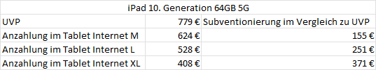
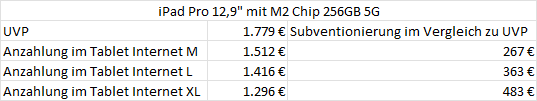

Hi! Ich hab mal beim Social Media Team auf X (Twitter) nachgefragt bin gespannt was sie antworten
LG

Hallo
Bei der deutschen Telekom gibt es jetzt das T Tablet mit 5G. Wann wird es das Gerät auch in Österreich geben? Laut der DT soll das Gerät auch in Österreich erscheinen. Wie lange wird es Updates dafür geben?
Hi! Ich hab mal beim Social Media Team auf X (Twitter) nachgefragt bin gespannt was sie antworten
LG

Bin schon auf die Antwort gespannt.
Gibt es eigentlich noch eine Möglichkeit an Magenta zu wenden ohne dieses starre System mit Kategorien wo man oft nicht weiß was man auswählen soll, und ohne den Social Media Kram? Oder ist man ohne Facebook Twitter und co schon zum Menschen 2. Klasse degradiert?
In Kroatien und Ungarn sind das T Tablet und die beiden neuen T Phones bereits erhältlich.
Zumindest in Deutschland und Polen gehen die Geräte ab Mittwoch in den Verkauf.
Das T Tablet dürfte für den Preis von 220€ als günstiges 5G Tablet recht interessant sein. Aber da es sich, wie bereits in den 2022 T Phones, um den Mediathek Dimensity 700 Prozessor handelt, darf man sich vom Modem nicht zu viel erwarten. Maximal zwei 4G Component Carrier (2CA 4G) plus ein 5G NSA Component Carrier und kein n75 5G. Spannend wird ob das T Tablet, anders als die 2022 T Phones, mehr als eine W-Lan Antenne (1x1) haben wird (also halbe Datenrate im Vergleich zu zwei Antennen aka 2x2).
Hoffentlich werden die dazugehörigen Tablet Tarife etwas überarbeitet. Wenn ich mir die Subventionierungen des iPad 10. Generation (64GB 5G) und iPad Pro 12,9" mit M2 Chip (256GB 5G) ansehe sollte das T Tablet mindestens ab dem Tablet Internet L ohne Anzahlung erhältlich sein, wenn nicht sogar ab dem Tablet Internet M. Diese beiden Tarife erlauben aktuell maximal 4G+ und noch nicht 5G NSA. 5G NSA gibt es erst im Tablet Internet XL.


Am 20.8.2023 um 13:06 schrieb Julian S.:Wie lange wird es Updates dafür geben?
Von der ungarischen Seite mit Google Übersetzer:
4 Jahre Software-Support -> bis Q3 2027
2 Jahre Android-Betriebssystemupdates -> maximal Android 15
3 Jahre monatliche Sicherheitsupdates und vierteljährliche Sicherheitsupdates im 4. Jahr
Wurde es schon von Magenta getestet was es kann?
Da die T Phones 700+800 können sollte das Tablet das auch können, oder? Vielleicht auch 800+1800+700? Wie schaut es mit SIM Lock aus?
Leider ist dazu dem Social Media oder Chat Team leider nichts bekannt LG

Hallo zusammen 😀 .
Schau mal: https://newsroom.magenta.at/2023/08/22/neues-t-tablet-und-aktualisiertes-t-phone-bei-magenta/
Ab 24.8. auch bei Magenta in Österreich erhältlich.
Diese Info ging heute druckfrisch raus 😉 . LG Karo
Fragen, die nicht beantwortet wurden:
Am 20.8.2023 um 15:37 schrieb Julian S.:Gibt es eigentlich noch eine Möglichkeit an Magenta zu wenden ohne dieses starre System mit Kategorien wo man oft nicht weiß was man auswählen soll, und ohne den Social Media Kram? Oder ist man ohne Facebook Twitter und co schon zum Menschen 2. Klasse degradiert?
Am 20.8.2023 um 18:20 schrieb Julian S.:Wurde es schon von Magenta getestet was es kann?
LG RS.
Hey zusammen, alles Möglichkeiten um uns zu erreichen, sind auf unserer Webseite ersichtlich -> https://www.magenta.at/hilfe-service/service?hotline=true#kontakt .
Testberichte, was es kann, werden bestimmt noch folgen. LG JD.
Das T Tablet ist nun bestellbar (aktuell nur mit Tarif).
Im Tablet Internet M um einmalig 144€ und ab dem Tablet Internet L um einmalig 0€. (zzgl. Urheberrechtsabgabe von einmalig 4,50€)
5G gibt es aber erst ab dem Tablet Internet 5G XL.
Auch das 2023 T Phone ist nun mit Vertrag verfügbar. Das T Phone Pro 2023 mit 256 GB statt 128 GB jedoch nicht.
T Phone 2023 gib es um 72€ im Mobil S, um 120€ im Mobile Young und in allen anderen um 0€
Aber das 2022 T Phone Pro ist da das bessere Angebot mit 0€ im Mobile S und 48€ im Mobile Young.
Kommt es vielleicht noch ohne Vertrag? Die deutsche Telekom bietet es ja auch ohne Vertrag an.
Sind die Geräte die in DE von der Telekom angeboten werden identisch mit denen von Magenta?
Hi @Julian S. , uns liegen derzeit keine Infos dazu vor, ob wir das T-Tablet auch ohne Vertrag anbieten werden. Und ja, Magenta bietet die gleichen Geräte wie die Deutsche Telekom an. Unter https://shop.magenta.at/product/mobiles-internet/t-tablet-5g-dark-shadow-5305 findest du alle technischen Infos und Details. Ebenso findest du Infos auf der Website der Deutschen Telekom. LG Doris
Gut zu wissen, für den Fall daß es bei uns nicht ohne Vertrag angeboten wird.
Auf jeden Fall eine gelungene Sache. Hochpreisige 5G Tablets gibt bereits. Und das T Tablet rundet das Angebot nach unten hin ab. Und Updates solles ja auch lange geben.